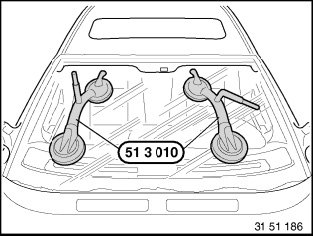
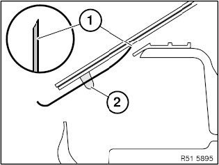
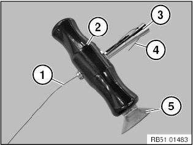
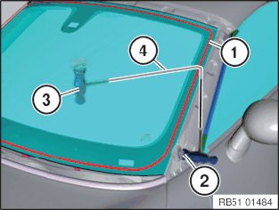

51 31 ... Window Glass Removal With Wire Pull Handle
51 31 ... Window Glass Removal With Wire Pull Handle

WARNING:
- Follow safety instructions for working on vehicles with airbag systems (risk of injury).
- Always wear safety goggles and protective gloves for your own safety.
IMPORTANT: Handle sharp-edged tools with care (risk of damage to the head airbag and the window glass).

IMPORTANT:
- Follow the vehicle-specific repair instructions.
- Protect inner and outer working area (body, trim panels, cables etc.) against damage.

Used tool:
Wire pull handles
Dashboard protection
Wire starter

Use suction cups (51 3 010) to lift out the window glass.
Always keep both suction cups dry and clean to ensure their optimum adhesion on the windscreen.
Secure window glass (if necessary with adhesive tape) against falling out.

Pulling cutting wire into vehicle:
- Grip wire with pliers (If accessibility is bad, stick wire with wire starter through adhesive bead.)
- Wire end (1) must be bent towards window glass.
- Heat wire end (1) and use it to pierce adhesive bead (2).
- Pull approximately half of the wire into the passenger compartment

Attach wire pull handles:
Feed in cutting wire (1) in cutting handle (2) and clamping element (3) as illustrated.
Move back cutting handle (2) over clamping element (3) and trap wire end (4).
Danger of injury.
Wire end (4) must not protrude out of cutting handle (2).
Cutting handle (2) can be secured with suction cup (5) to the vehicle window or body during each of the work operations. This prevents damage to the paint.
Fit second wire pull handle to other wire end.

Perform repair work with the aid of a second person.
Cutting wire (4) must be guided in cutting direction at an acute as possible angle (>45°) to adhesive bead (1).
Cut through adhesive bead (1) by pulling cutting handle (2) and at the same time providing counter support with cutting handle (3).
Pull back cutting wire (4) with cutting handle (3) and make sure that cutting wire (4) is always held under tension.
Cut through remaining adhesive bead in the same way.